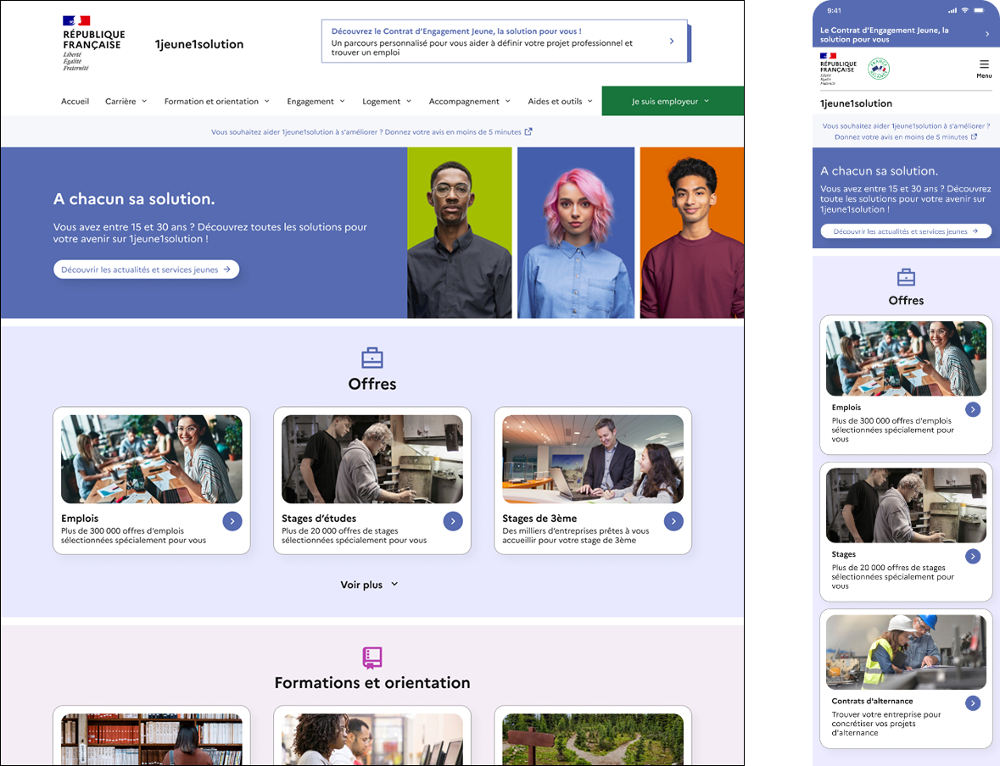
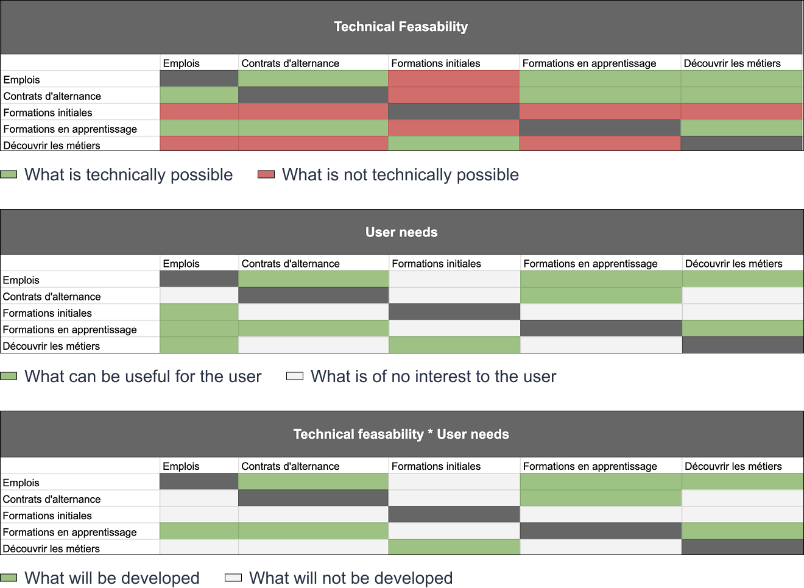
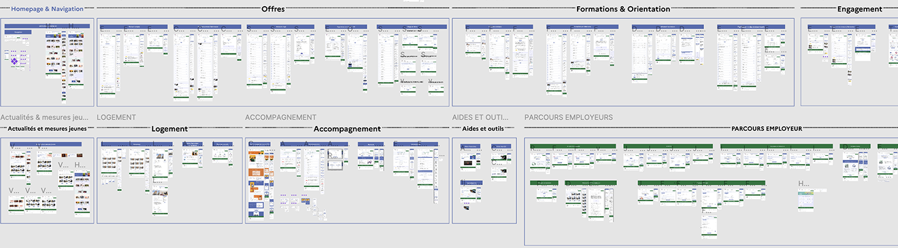
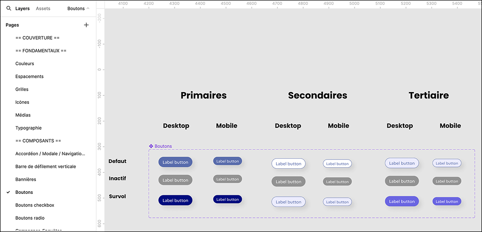

Étude de cas
Concevoir une plateforme nationale pour les jeunes (1jeune1solution — Ministère du travail)
Product design d'un site public mobile-first pour aider les 15–30 ans à trouver emploi, formation, logement et accompagnement en un seul endroit.
Contexte
1 jeune 1 solution rassemble sur une seule plateforme publique l'ensemble des services utiles aux jeunes : emploi, formation, logement, accompagnement. Le défi : concevoir un produit réellement utile à un public varié, avec des usages fortement orientés mobile.
J'avais contribué à la phase de cadrage en amont. Sur cette phase de delivery, mon rôle s'est élargi au product design complet : recherche continue, UX-UI, collaboration développeurs, analytics et amélioration dans le temps.

Ce que j'ai fait
Recherche & conception
- Entretiens utilisateurs et ateliers d'idéation
- Conception UX-UI mobile-first itérative
- Prototypes haute fidélité et interactifs
- Design system progressif sur Figma
Amélioration continue
- Tracking plan + analytics AT Internet
- Tests utilisateurs et questionnaires
- UI refinement bimensuel avec les développeurs
- Suivi qualité avant mise en production


